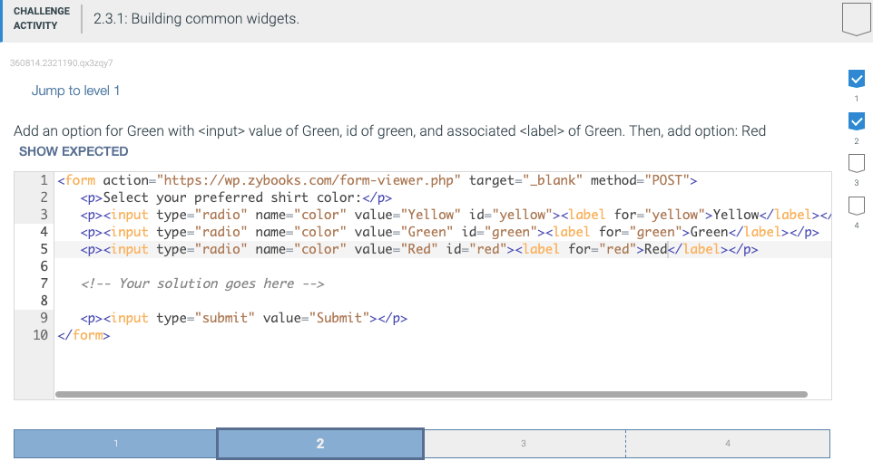

A checkbox is a widget for input elements with the type attribute of "checkbox", which allows users to check, or select, a value. A checkbox initially appears selected if the checked attribute is set. Ex: <input type="checkbox" checked> creates a checked checkbox. The checked attribute is an example of a boolean attribute. A boolean attribute is an attribute that is true when present and false when absent. No value must be assigned to a boolean attribute.
For each checkbox selected, the browser sends the checkbox's name and value to the server. If the value attribute is not specified, the default value of "on" is sent. If a checkbox is not selected, the browser does not send anything to the server. A common error on the server is failing to record all checkboxes in the form as the browser doesn't report any values for checkboxes not selected by the user.
Good practice is to use label elements with checkboxes so the user can click the label to check and uncheck the associated checkbox.
A radio button is a widget for input elements with the type attribute of "radio", which allows users to select exactly one value from possibly many values. The web browser groups radio buttons together with the same name attribute, where each possible value in a group has an associated input. When submitting a form, the browser sends the selected radio button's name and value attribute. Ex: If the radio button <input type="radio" name="movie" value="ET"> is selected, "movie=ET" is sent to the server.
The main difference between a radio button and checkbox is that only one radio button in a group can be selected, while any number of checkboxes can be selected.

The <select> opening and closing tags create a drop-down menu (or drop-down list), which allows users to select one of several predefined values. The <option> opening and closing tags create a value, or option, the user can select within a drop-down menu. When the user is not interacting with the menu, the drop-down menu usually displays the selected option.
The difference between a drop-down menu and a radio button widget is that the drop-down menu only displays the options when interacting with the user, while a radio button widget always displays all options.
A list box widget is created by specifying a size with the select element's size attribute. Ex: <select size="4"> creates a list box that shows four options at a time. If the list box contains more than size options, the browser adds a vertical scrollbar so the user can scroll through the list of options.
The multiple attribute allows the user to select multiple options. On Windows, the user must hold down the control (Ctrl) button to select multiple options, and on a Mac, the user must hold down the command button. Many users are unaware of how to choose multiple options from a list box, so good practice is to use checkboxes instead.
A button widget can be created using the <button> opening and closing tags or with <input type="button">. The <button> element allows text and images to be displayed in a button, but an <input> button only allows text.
The <button> element has a type attribute that can be set to various values like "button" or "submit". The "button" type is typically used with JavaScript to perform an action when clicked. The "submit" type creates a submit button for a form. If the type attribute is not specified, different browsers may choose different default types, so good practice is to always specify the type.
A password field is a widget for input elements with the type attribute of "password", which allows users to enter a password without the password contents being displayed on-screen. Web browsers usually provide facilities to remember passwords at various websites to help users.
Forms that submit passwords or any sensitive data should always submit with URLs that use HTTPS. Form data submitted with HTTP are not encrypted, but HTTPS encrypts form data.
The HTML below uses the size attribute to limit the password field's width and uses the maxlength attribute to limit the maximum number of characters the user can enter. The size and maxlength attributes can be used on text boxes as well.
The <fieldset> tag groups related form widgets together and draws a box around the related widgets. The <legend> tag defines a caption for a <fieldset>.

